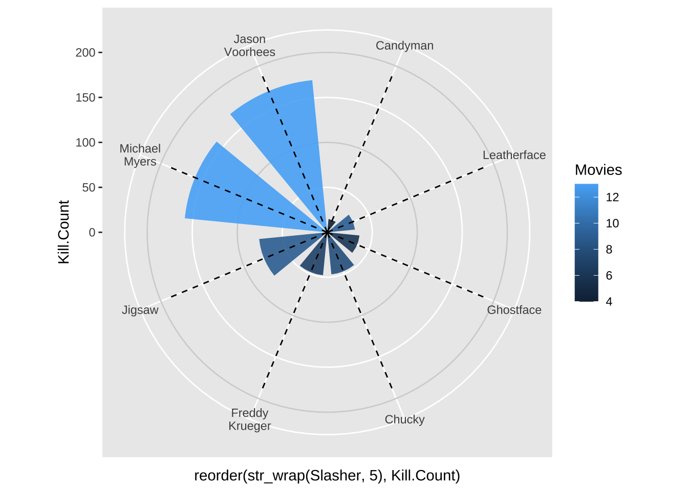
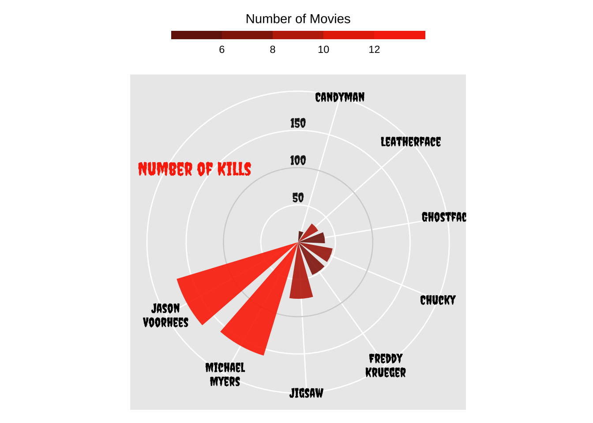
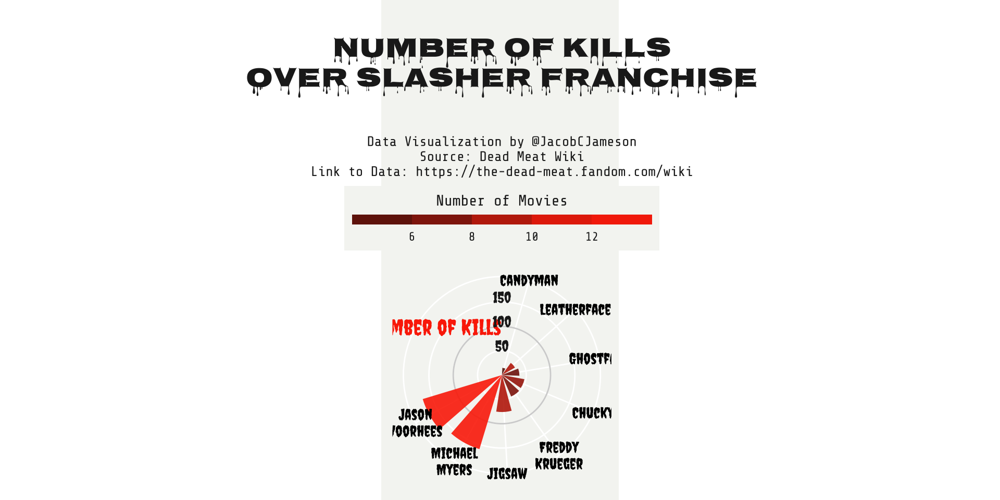

library(tidyverse)
library(lubridate)
library(ggstream)
library(showtext)
library(patchwork)
library(grid)
library(ggridges)
library(viridis)
library(hrbrthemes)
library(png)
font_add_google("Creepster", "creepster")
font_add_google("Nosifer", "nosifer")
font_add_google("Share Tech Mono", "techmono")
showtext_opts(dpi = 320)
showtext_auto(enable = TRUE)
# Candyman Kill Count: 15
# Leatherface Kill Count: 31
# Ghostface Kill Count: 36
# Chucky Kill Count: 47
# Freddy Krueger Kill Count: 48
# Jigsaw Kill Count: 76
# Michael Myers Kill Count: 159
# Jason Voorhees Kill Count: 170
#scream
#6, 8, 9, 10, 6
#1996, 1997, 2000, 2011, 2022
#candyman
#6,9, 16, 17
#1992,1995, 1999, 2021
# Chucky
#Jigsaw
#Freddy Krueger
df <- data.frame (`Slasher` = c("Candyman", "Leatherface", "Ghostface", "Chucky",
"Freddy Krueger", "Jigsaw", "Michael Myers",
"Jason Voorhees"),
`Kill Count` = c(15,31,36,47,48,76,159,170),
Movies = c(4, 9, 6, 8, 7, 9, 13, 13)
)#HorrorPlots Slasher Kill Count
plt <- ggplot(df) +
geom_hline(
aes(yintercept = y),
data.frame(y = c(0:2) * 100),
color = "lightgrey"
) +
geom_col(
aes(
x = reorder(str_wrap(Slasher, 5), Kill.Count),
y = Kill.Count,
fill = Movies,
),
position = "dodge2",
width = 0.75,
show.legend = TRUE,
alpha = .9
) +
# Lollipop shaft for mean gain per region
geom_segment(
aes(
x = reorder(str_wrap(Slasher, 5), Kill.Count),
y = 0,
xend = reorder(str_wrap(Slasher, 5), Kill.Count),
yend = 190
),
linetype = "dashed",
color = "black"
) +
# Make it circular!
coord_polar()
plt
plt <- plt +
annotate(
x = 10,
y = 170,
label = "Number of Kills",
geom = "text",
color = "#FC3205",
size = 5.5,
family = "creepster"
) +
# Annotate custom scale inside plot
annotate(
x = 11.7,
y = 60,
label = "50",
geom = "text",
color = "gray12",
family = "creepster"
) +
annotate(
x = 11.7,
y = 110,
label = "100",
geom = "text",
color = "gray12",
family = "creepster"
) +
annotate(
x = 11.7,
y = 160,
label = "150",
geom = "text",
color = "gray12",
family = "creepster"
) +
# Scale y axis so bars don't start in the center
scale_y_continuous(
limits = c(0, 180),
expand = c(0, 0),
) +
# New fill and legend title for number of tracks per region
scale_fill_gradientn(
"Number of Movies",
colours = c("#621605","#91210C","#D92E08","#FC3205")
) +
# Make the guide for the fill discrete
guides(
fill = guide_colorsteps(
barwidth = 15, barheight = .5, title.position = "top", title.hjust = .5
)
) +
theme(
axis.title = element_blank(),
axis.ticks = element_blank(),
axis.text.y = element_blank(),
axis.text.x = element_text(color = "black",
size = 11, family = 'creepster'),
legend.position = "top",
)
plt
plt <- plt +
labs(
title = "\nNumber of Kills\nOver Slasher Franchise",
subtitle = "\n\nData Visualization by @JacobCJameson\nSource: Dead Meat Wiki\nLink to Data: https://the-dead-meat.fandom.com/wiki") +
# Customize general theme
theme(
# Set default color and font family for the text
text = element_text(color = "gray12", family = "techmono"),
# Customize the text in the title, subtitle, and caption
plot.title = element_text(face = "bold", size = 20, hjust = 0.5, family = 'nosifer'),
plot.subtitle = element_text(size = 10, hjust = .5),
# Make the background white and remove extra grid lines
panel.background = element_rect(fill = "#f5f5f2", color = "#f5f5f2"),
plot.background = element_rect(fill = "#f5f5f2", color = NA),
legend.background = element_rect(fill = "#f5f5f2", color = NA)
#panel.grid = element_blank(),
#panel.grid.major.x = element_blank()
)
plt